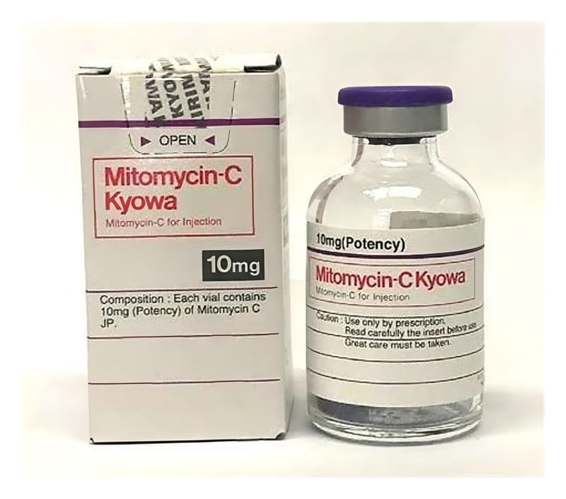

Mitomycin-C Kyowa 10 mg Enjektabl Flakon, 1 Adet

Ne için kullanılır
KT · Bölüm 1; e MİTOMYCİN—C kullanılmadan önce sulandırılan enjeksiyonluk çözeltidir ve ; 6 antineoplastik ajan olarak bilinen, birçok kanser türünün tedavisinde kullanılan bir ilaçtır. | e MİTOMYCİN—C flakonun ambalajında lastik tıpalı bir adet, tek kullanımlık flakon | bulunur. MITOMYCIN—C mavi-mor, steril liyofilize kuru toz şeklindedir. İ e MİTOMYCİN—C, mesane (idrar kesesi) kanseri, meme kanseri, baş- boyun kanseri, mide ve pankreas kanserleri, prostat kanseri ve rahim ağzı kanserinin tedavisinde | kullanılır.